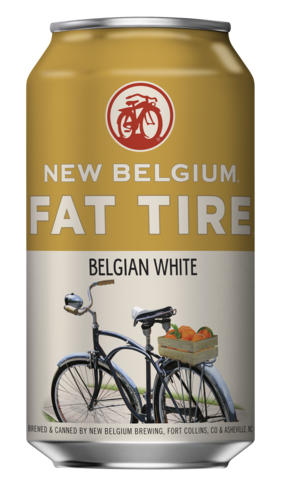

<div class="wrapper">
<div class="gridArea">
    <div class="welcome">
        <h1> Welcome {{firstname}}! Take a look around!</h1>
    </div>
    <mat-card class="breweryOTM">
        <mat-card-title>
            Check out the Brewery of the Month!
        </mat-card-title>
        <mat-card-title>
            Four Day Ray Brewing
        </mat-card-title>
        <mat-card-subtitle>
            Address: 11671 Lantern Rd, Fishers, IN 46038
        </mat-card-subtitle>

        <mat-card-subtitle>
            Menu:
            <a target="_blank" href="http://www.fourdayray.com/menu/"> fourdayray.com</a>
        </mat-card-subtitle>

        <mat-card-subtitle>
            Phone: (317) 343-0200
        </mat-card-subtitle>
    </mat-card>
    <mat-card class="featuredBeerOne">
        <div>
            <mat-card-title>
                Featured Beer
            </mat-card-title>
                        <div class="fattire">
                            
                        </div>
            <mat-card-title>
                Fat Tire
            </mat-card-title>
            <mat-card-content>
                <p>
                    <b>Style</b> Belgian White</p>
                <p>
                    <b>Brewery</b> New Belgium</p>
                <p>
                    <b>Type</b> Ale</p>
                <p>"25 years ago we started brewing Fat Tire Belgian Style Ale. It became an iconic beer, and a symbol synonymous
                    with craft. Now, for the first time, we’re adding a new beer to the Fat Tire family: Fat Tire Belgian
                    White. Taking inspiration from our decades of experience brewing Belgian beers, Fat Tire Belgian White
                    is made with Seville oranges and Indian coriander, both freshly ground less than a mile from our Fort
                    Collins brewery. It’s a fresh, perfectly sweet, natural tasting Belgian White." 
                </p>
                -<a target="_blank" href="https://www.newbelgium.com/beer/fat-tire-belgian-white/">New Begium</a>
            </mat-card-content>
        </div>
        <div></div>
    </mat-card>
    <mat-card class="featuredBeerTwo">
        <div>
            <mat-card-title>
                Featured Beer
            </mat-card-title>
            <mat-card-title>
                Modus Hoperandi
            </mat-card-title>
            <mat-card-content>
                <p>
                    <b>Style</b> IPA</p>
                <p>
                    <b>Brewery</b> Ska Brewing</p>
                <p>
                    <b>Type</b> Pale Ale</p>
                <p>"A mix of citrus and pine that will remind you of the time you went on a vision quest and woke up in a pine-grove
                    full of grapefruit trees. An American-style India Pale Ale with a deep golden-orange color. Bitter and
                    hoppy, with a surprisingly smooth finish. Pairs well with strong, spicy foods such as curries/Thai food.
                    Also works well with smoked or grilled meats, and for dessert, go for the sweet, like cheesecake or crème
                    brulee."
                </p> -
                <a  target="_blank" href="http://skabrewing.com/brews/modus-hoperandi-ipa/">Ska Brewing</a>
            </mat-card-content>
        </div>
        <div></div>
    </mat-card>
</div>
</div>